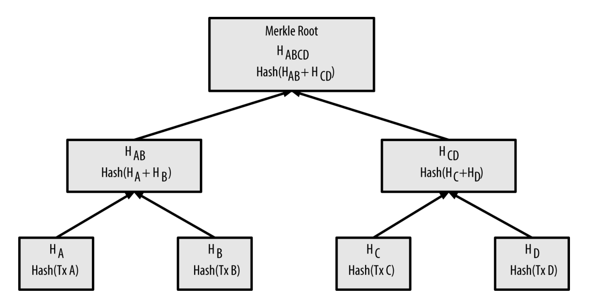
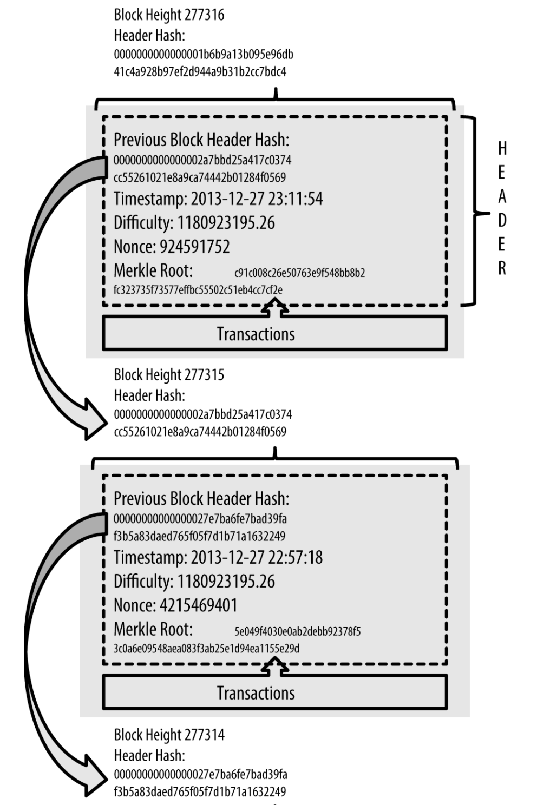
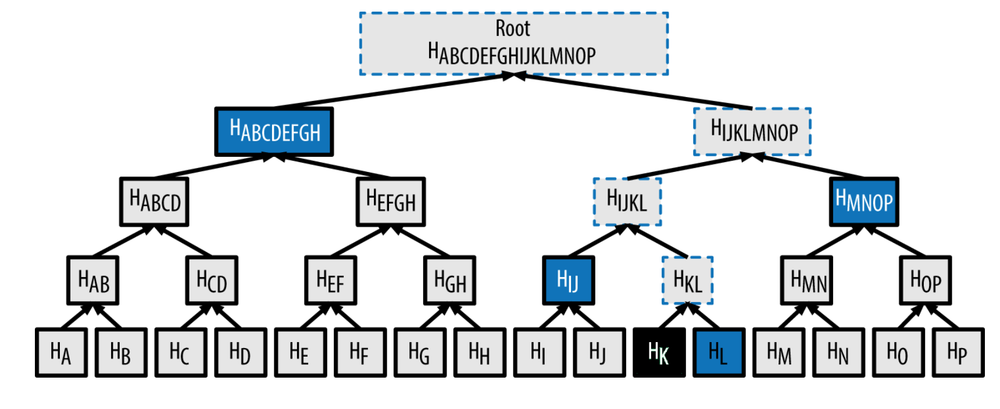

What is Merkle tree?
Merkle tree is a data structure which build from the leaf to root using hash functions. It is used in many applications other than blockchain. Cassandra uses it to detect inconsistency between replicas and update replica if necessary. Git uses it to manage it’s internal object data models. It is a very useful data structure to encode large number of data into very small hash representation.
Let’s see how blockchain uses Merkle tree to encode transactions.

As you can see, we have HA, HB, HC and HD four transactions. We build leaves by hashing transaction data, in bitcoin blockchain case, it uses double-SHA256, basically SHA256 twice. Each hash generate 32-byte hash output. And then we work our way up to generate second level nodes, by concatenating leaf-nodes’ hashes and apply double-SHA256. In the picture, this produces HAB and HCD. We apply the same process again to generate the root node. And we stop when we reaches root. As you can see, each node is 32-byte in this tree.
How is this Merkle tree used in blockchain?

If you look inside each block, you will find it stores Merkle tree root hash in the block header. And transaction data are completely separate from headers. Basically the Merkle tree root hash encodes all transaction data, and any changes of transaction a part of the tree will invalidate the root hash. This way people can validate if data has been changed using root hash. Each block’s hash is generated from hashing header information.
This usage of Merkle tree and separation of header and actual transactions enables blockchain to be used in light-weight mode, which is called Simplified Payment Verification (SPV). SPV nodes don’t have all transactions and do not download full blocks, just block headers. In order to verify that a transaction is included in a block, without having to download all the transactions in the block, they use an authentication path, or merkle path.

Imagine we want to validate HK to see if it’s in a block. We basically need block header to find out Merkle tree root hash, Merkle path related to HK. Merkle path is all data you need to verify a transaction, in this case, all nodes labeled in blue. You redo all hashes starting from HK and HL all the way to root, and then compare it to the root hash from the header. If they are the same, you can be sure it’s a transaction which is a part of the block. This verification requires log(N) hashes to do, which is pretty efficient.
Here is a code snippet how to build Merkle tree and return the root hash1
2
3
4
5
6
7
8
9
10
11
12
13
14
15
16
17
18
19
20
21
22
23
24
25
26
27
28
29
30
31
32
33
34
35
36
37
38
39
40
41
bc::hash_digest create_merkle(bc::hash_list& merkle)
{
// Stop if hash list is empty.
if (merkle.empty())
return bc::null_hash;
else if (merkle.size() == 1)
return merkle[0];
// While there is more than 1 hash in the list, keep looping...
while (merkle.size() > 1)
{
// If number of hashes is odd, duplicate last hash in the list.
if (merkle.size() % 2 != 0)
merkle.push_back(merkle.back());
// List size is now even.
assert(merkle.size() % 2 == 0);
// New hash list.
bc::hash_list new_merkle;
// Loop through hashes 2 at a time.
for (auto it = merkle.begin(); it != merkle.end(); it += 2)
{
// Join both current hashes together (concatenate).
bc::data_chunk concat_data(bc::hash_size * 2);
auto concat = bc::serializer<
decltype(concat_data.begin())>(concat_data.begin());
concat.write_hash(*it);
concat.write_hash(*(it + 1));
// Hash both of the hashes.
bc::hash_digest new_root = bc::bitcoin_hash(concat_data);
// Add this to the new list.
new_merkle.push_back(new_root);
}
// This is the new list.
merkle = new_merkle;
}
// Finally we end up with a single item.
return merkle[0];
}
Reference
https://www.safaribooksonline.com/library/view/Mastering+Bitcoin,+2nd+Edition/9781491954379/ch09.html#chain_of_blocks
https://en.wikipedia.org/wiki/Merkle_tree
https://github.com/bitcoin/bitcoin/blob/master/src/consensus/merkle.cpp